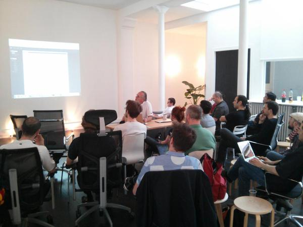
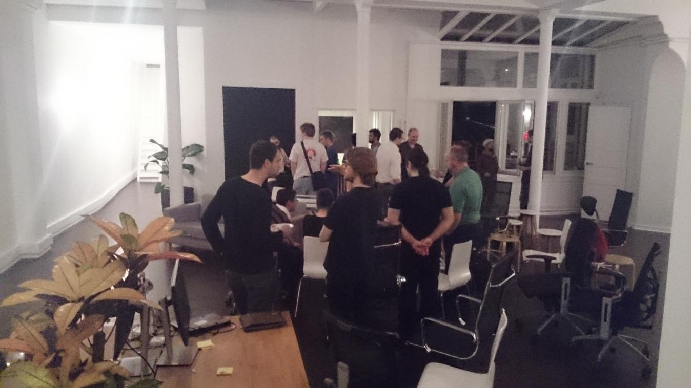

Une petite trentaine de membres de la communauté Salt parisienne a été accueilli dans les nouveaux locaux de Tinyclues pour ce meetup. Merci également à Logilab qui a sponsorisé la nourriture.
Nicolas Chauvat PDG de Logilab a annoncé son partenariat avec SaltStack pour assurer la formation, le support et la certification sur Salt en France et en Europe.
Voici un compte rendu rapide des trois présentations de cette soirée.
Interface Web SaltStack Enterprise
Rob Hilberding de SaltStack Inc. qui était à Paris pour plusieurs jours est venu présenter une "pure preview" ce que sera potentiellement l'interface web de la version Enterprise de SaltStack.
Il a présenté l'interface qu'ils développent, cette dernière s'appuie sur l'API SaltStack et MariaDB ou MySQL. À noter que cette interface n'est qu'une extension, à savoir que la version SalStack Enterprise (master et minion) est basée sur le même code que la version communautaire.
L'interface supporte le multi-master, elle liste les minions et pour chaque minion : elle permet d'avoir l'ensemble de ces grains, le statut de sa connexion et des informations sur les derniers jobs.
La liste des minions pouvant être longue il y a la possibilité de filtrer soit par une correspondance sur une partie de l'ID des minions soit sur la valeur d'un ou plusieurs grains. Un filtre peut permettre la création de groupe de minions, c'est également possible via un wizard dédié. Les groupes créés peuvent être partagés (publics) ou privés. Pour les minions sélectionnés il est possible de lancer un job (depuis une liste). Ainsi cette interface permet à des utilisateurs ne connaissant pas de manière poussé Salt de lancer des actions (job) sur des machines (minions) pour lesquelles ils ont les droits.
Comparaison avec Ansible
Paul Tonelli de Heuritech a présenté les différences entre Ansible et SaltStack qu'il a pu appréhender après une semaine d'utilisation d'Ansible.
- Ansible utilise SSH pour les communications et donc c'est le serveur qui se connecte aux clients ce qui peut impliquer de paramétrer ssh avec des proxies, le cas typique est l'accès aux serveurs qui sont derrière un HAProxy en mode transparent.
- Ansible n'a pas de serveur (daemon) qui tourne en continu comme SaltStack, mis à part Tower qui est payant.
- Tower est une interface Web, qui au delà du fait d'être une GUI, peut offrir des fonctionnalités proches du reactor de Salt.
- L'approche d'Ansible est d'avoir un playbook par projet alors que Salt a une arborescence pour l'ensemble.
- Ansible peut cibler un peu comme Salt mais sur des noms de machines et faire des groupes de machines en les déclarant dans un fichier, les wilcards peuvent être utilisés.
- La gestion des dépendances est simple, il faut que cela soit déclaré avant/au dessus. La conclusion est que Ansible a une approche plus minimaliste et la configuration est plus statique.
Retour d'experience
Joe Bounour de DDN a présenté l'utilisation de Salt dans le cadre du déploiement et maintient des produits de DDN de stockage (type Big data et Object storage). Les produits de DDN déploient des paquets RPMs et produisent une configuration de clusters qui va pousser sur l'ensemble des nœuds (via SSH) les masters et les minions pour déployer toute la stack de cluster management (ZooKeeper, HBase, Hadoop, memcached, etc) afin de surveiller et orchestrer les noeuds. À noter que l’environnement déployé est multi-master, composé au plus de 2 ou 3 masters afin de garantir un service haute disponibilité. DDN a développé un ensemble d'outils (*ctl) qui forment une couche d'abstraction à SaltStack afin de gérer un cluster de nœuds pour des solutions de stockage. Salt est masqué pour le client qui n'a pas besoin de le maîtriser. Salt a été choisi pour sa rapidité, sa parallélisation, sa consistance et son mode multi-master (actif-actif).
Nous avons poursuivi les discussions autour de petits bagels offerts par Logilab.
